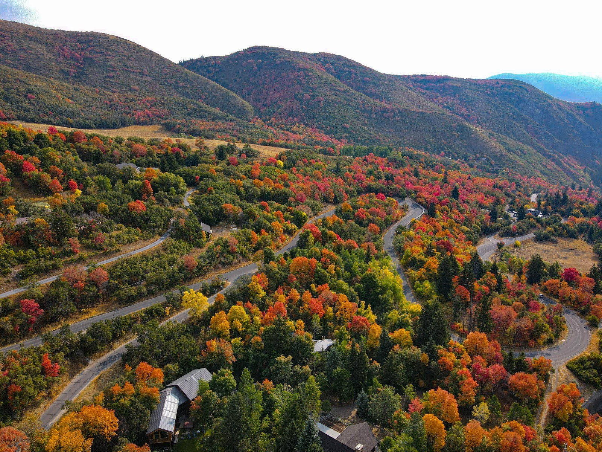

Alpine Loop Scenic Backway
This drive is a favorite during autumn when the reds and golds of maple,
oak, and aspen contrast sharply with a backdrop of evergreens. Timpanogos Cave National Monument is a worthwhile stop along the route and Cascade Springs makes a great rest stop.
The full Alpine Loop is closed during winter months, however the world-renowned Sundance Mountain Resort is accessible year-round from US Hwy 189.